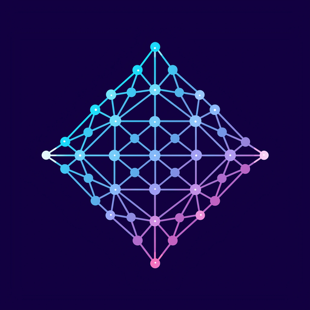

android
8.0+ (API 26–35)

latticeA small, fast browser and publisher for gemtext — but the pages live on the Urbit network. Every page is addressed as urb://~ship/path and travels peer-to-peer between ships. No DNS, no web server, no host in the middle. Bring your own ship.
lattice is two pieces: a tiny Gall agent on your ship, and a native app you
point at it. Drop a gemtext file in your ship's /pub and anyone
on the network can read it — instantly, straight from your ship.
/pub/*.gmi to the Urbit namespace and serves it to other ships over remote scry. Follows files you subscribe to.urb:// pages, edits your own, and gets live notifications when a followed file changes.urb://
Fetch and read gemtext published by any ship, peer-to-peer over Urbit's remote scry. No server in the middle — the bytes come straight from the author's ship.
/pub/*.gmi on your ship is instantly readable by anyone as urb://~you/that/path. Edit it from inside the app.
urb:// pages open at once, Ctrl+T for a new one, bookmarks for the pages you keep coming back to.
%contacts, via a small manifest each publisher exposes.
No analytics, no third-party SDKs, no telemetry. The app speaks to the Urbit ship you point it at — that's the entire network surface. Your session never leaves the device unencrypted: lattice refuses to send your +code or cookie in cleartext to a remote ship, and stores it owner-only at rest.
Everything you put in /pub is public by design — that's the whole
point of a publishing tool. Nothing else on your ship is exposed.
The %lattice Gall agent publishes via Clay → %grow
and answers remote scry; the app speaks an authenticated HTTP API to your ship over
OkHttp, with live updates on an Eyre SSE channel. Kotlin + Compose Multiplatform for
the UI, one shared codebase across Android and JVM desktop. Hoon unit tests on the
agent, a JVM test suite on the app, both gated in CI.
Pick your platform. Direct links resolve to the latest tagged release; fall back to
the releases page for
older versions and release notes. You'll also need the
%lattice desk running on your ship — see the
install notes.
Tap the APK; you may need to allow "Install unknown apps" for your browser or file manager. Android 8+ (API 26).
chmod +x the AppImage and run it; needs FUSE 2 (default on most
desktops). The .deb installs system-wide on Debian / Ubuntu and derivatives.
Open the DMG and drag lattice to Applications. First launch: right-click → Open → Open (unsigned, so a plain double-click is blocked by Gatekeeper).
Double-click the MSI to install. SmartScreen may warn — "More info" → "Run anyway".
New to Urbit? urbit.org/overview/running-urbit walks you through booting a ship. Once you have its HTTP URL and +code, log in inside lattice and you're browsing.